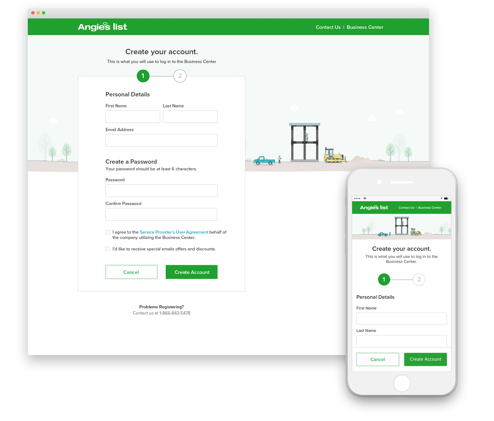
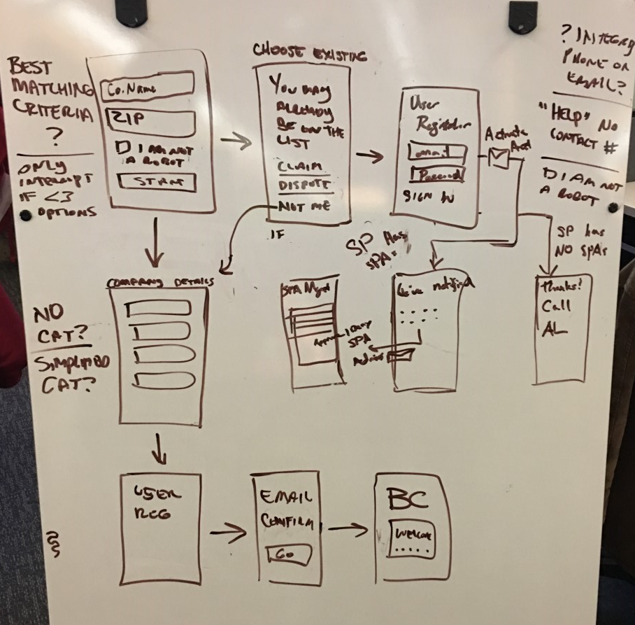

Angie's List
Connecting homeowners in need with quality service providers
Angie's List helps homeowners find quality Pros in their area based on millions of verified reviews written by other members. They also help Pros manage their reputation online and generate high quality leads from home owners.
Designing a better sign up process for Service Providers
Project Overview
The Challenge
Service Providers who wanted to list their business on Angie’s List had to overcome unnecessary barriers including a non-responsive sign up flow that many pros struggled to complete, and a 2-6 day waiting period to access their account online.
My Role
I was the interaction design and UX lead on the project, which meant that I kept my team in the loop and managed project deadlines while also being responsible for delivering wireframes and prototypes.
The Team
The design team included myself, a UX researcher, and a visual designer. The technical challenge of the project required 3 dedicated scrum teams as well as regular checkins with dev ops, the integrity team (description), data analytics, and software architecture.
the legacy sign up experience
Understanding the current state
The first step in any redesign is to understand the current state, and where it succeeds or fails. A quick review of our legacy design and historical user research revealed some big experience gaps. Most notably, the old design required all Pros to search for their profile, assuming that the majority would already be listed on Angie's List through other methods, but was that true?
Legacy Design
Assumed Pro is already listed
Created lots of duplicate accounts
Pros had to wait 2-6 days to log in
No email verification of accounts
Search returned imprecise results
Inconsistant navigation
Outdated visual style
No mobile responsive state
Consulting the usage data
The analytics team helped us understand exactly where traffic was going and when it was dropping off in our registration funnel. Surprisingly, we found that a very low percentage of users actually claimed a company from the initial search step, most preferred to create a new account. We also found that presenting users with a long list of possible matches caused the biggest decrease in traffic of the entire flow!
When we asked the customer care team about the decrease, they reported that some of the Pros who gave up during step 2 later called in for support. These Pros had gotten confused because they had expected to start adding their company right away and instead were met with a list of 30+ seemingly random companies. We needed a more accurate and less confusing way to suggest possible matches to Pros.
Ideation and Prototyping
Kicking off the project
Armed with usage data and high level product requirements, we scheduled a kickoff meeting that included members from UX, product management, engineering, marketing, and customer care. I also created a shared confluence page that the group could use to track key questions, roadblocks, and see system diagrams or design concepts.
Sketching the experience, together
After gaining alignment on the project goals during the kickoff, some members of the project team got together to sketch some different solutions and surface more unanswered questions like "What should the behavior of user validation/activation be?" or "How will we be monitoring creation of duplicates?" We also made sure to sketch "mobile first".
Designing the initial prototype
After synthesizing the thoughts from the ideation session, I sketched a few different versions of the flow and got some great critique from the project team and my fellow interaction designers. After refining the concept a bit, I took to InVision App to make an interactive prototype.
I revisited the problem of user created duplicates in the new design. Duplicates are confusing for members, and expensive for Angie's List to resolve. We knew that we wanted to collect as much information as possible before presenting a list of possible matches, but we weren't sure if placing this step later in the flow would cause annoyance or confusion for our users. We also wanted to reduce friction to new users by only interrupting with possible duplicates if we were very certain we had a match.
To answer these, and many other questions, we had to do some usability testing.
Usability Testing and Iteration
Key research questions
The ux researcher on our team led a collaborative effort to come up with research questions we wanted to answer during our test:
Will service pros be able to easily add themselves to the list?
Will they complete the flow?
What are service pros’ expectations around verification
of their info/the business’ info?
What is the ideal order of fields and/or # of screens and
steps to reduce friction?
Will service pros understand how to proceed when the
duplicate screen appears?
Methods and results
We tested our prototypes with 6 service providers for 40 minutes each. These remote usability sessions walked participants through a number of tasks while members of the project team observed.
What Worked
Pros expected to add a business, not search for one
Two step flow caused less anxiety and uncertainty
It was clear which fields were required
Pros had a high tolerance for duplicate screen
What Didn't Work
No way for existing users to sign in on step 1
Contact info was confusing between step 1 and 2
Some Pros don't want members to see their address
Some Pros wanted to add more than one category
Pros want to recall data entered previously on dupe screen
Final updated wireframes
Visual Design
After a competitive analysis of other sign up flows, we noticed that they all looked more or less the same. We wanted to visually differentiate Angie's List from those other experiences and add a more personal touch to the flow.
The two visual designers on the team experimented with different styles before landing on an illustrative approach that helped tell the story of setting up a business. Not only did they look great, they also aided in communicating the purpose of each step.